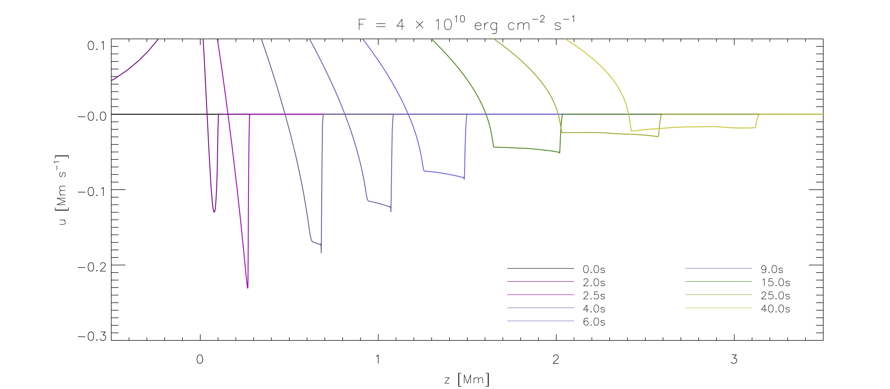
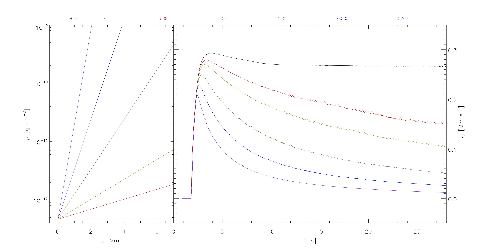
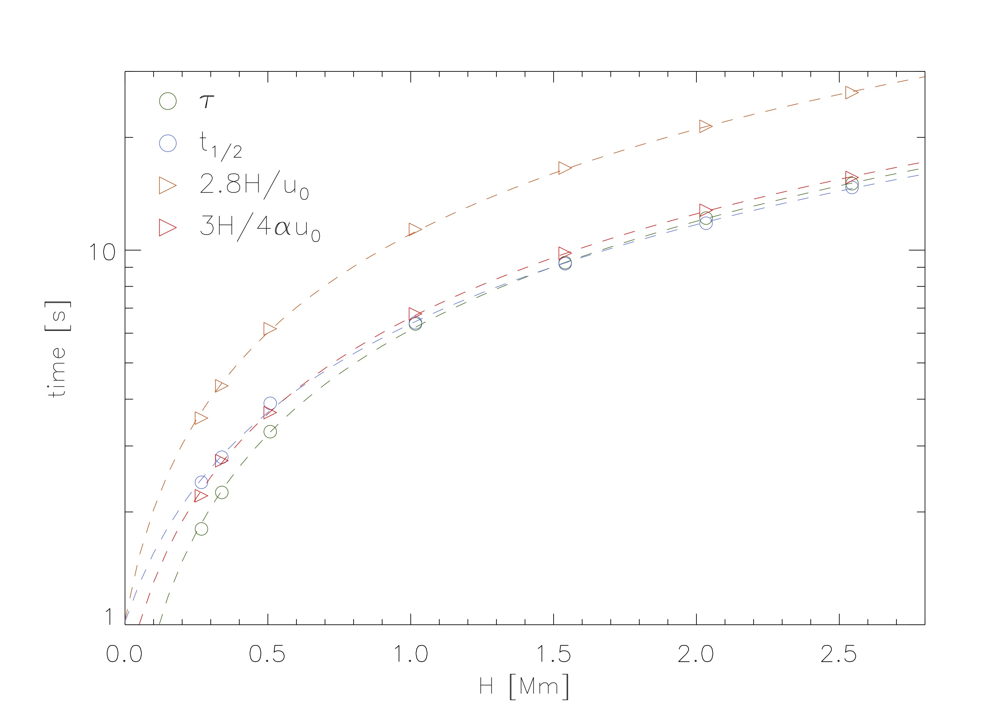

William Ashfield

Contact: williamashfield@montana.edu
GitHub |
CV
Office: Barnard 338
Characterizing Condensation
DOI: doi.org/10.3847/1538-4357/abedb4My first project was an investigation into the dynamics of chromospheric condensation - characteristic downflows seen in the lower solar atmosphere during the impulsive phase of flares. Using 1D numerical simulations, we modeled the chromospheric response to coronal energy deposition.  We found condensation to be well described by 1) the peak downflow velocity and 2) the half-life. A parameter investigation found the density gradient of the chromosphere to have a large effect on the half-life.   The energy flux released in our model - a stand-in for the reconnection process - affected the peak downflow velocity. This investigation allowed for the development of a toolbox, where the density scale height of the chromosphere and the energy flux delivered to the chromosphere could be infered.
Data Driven Modeling
DOI: doi.org/10.3847/1538-4357/ac402dCurrently, we are working on applying the toolbox towards real condensation observations. One such obervation was found during the October 25th, 2014 X1.0 class flare.
 The evolution of the condensation seen here follows the predicted evolution from our previous investigation, as shown by the green dashed line. Stay tuned for updates!
The evolution of the condensation seen here follows the predicted evolution from our previous investigation, as shown by the green dashed line. Stay tuned for updates!